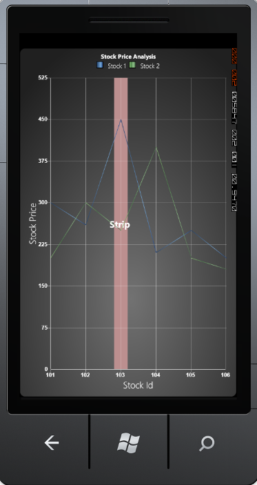

You can add Striplines (horizontal and vertical) to areas within the plot. You can also optionally repeat these Striplines at specific intervals. Set IsSegmented property to True, to create segmented strip lines.
List of Property
The following table contains the Property details.
|
Name of the Property |
Description |
Type of the Property |
Value It Accepts |
|
StripLines |
Store all the Striplines object |
Store all the Striplines object |
Brushes |
|
Interior |
Sets the color of Strip line |
Dependency Property |
|
|
RepeatEvery |
Specifies that the frequencies of Striplines are repeated |
Dependency Property |
Double |
|
RepeatUntil |
Specifies where the Stripline is repeated |
Dependency Property |
Double |
|
StartFromAxis |
Specifies if the Stripline starts from the beginning of the axis |
Dependency Property |
Bool |
|
Offset |
You can add an Offset to that starting location, when StartFromAxis is set to true |
Dependency Property |
Double |
|
Start |
Specifies where the Stripline starts when StartFromAxis is false |
Dependency Property |
Double |
|
IsSegmented |
Enables/Disables segmented Stripline feature |
Dependency Property |
Bool |
|
SegmentStartValue |
Initializes the segment start value for Stripline |
Dependency Property |
Bool |
|
SegmentEndValue |
Initializes the segment end value for Stripline |
Dependency Property |
Bool |
|
ContentHeight |
Initializes the Stripline content height |
Dependency Property |
Double |
|
ContentWidth |
Initializes the Stripline content width |
Dependency Property |
Double |
|
ContentVisibility |
Determines the visibility of Stripline content |
Dependency Property |
Visibility |
|
Content |
Specifies the content that should be displayed on Stripline. It may be any Framework Element. |
Dependency Property |
Object |
Adding Striplines
The following code illustrates how to add Striplines (horizontal and vertical) to areas within the plot.
|
[Xaml]
<syncfusion:ChartArea.PrimaryAxis> <syncfusion:ChartAxis ValueType="DateTime" IsAutoSetRange="True"> <syncfusion:ChartAxis.StripLines> <syncfusion:ChartStripLine StartFromAxis="True" Offset="2" ContentWidth="50" ContentOrientation="Horizontal" Interior="RosyBrown" StriplineContent="Strip" RepeatEvery="3" Width="30"/> </syncfusion:ChartAxis.StripLines>
</syncfusion:ChartAxis> </syncfusion:ChartArea.PrimaryAxis> |
|
[C#]
ChartStripLine cs = new ChartStripLine(); cs.StartFromAxis = true; cs.Offset = 2; cs.RepeatEvery = 3; cs.Interior = new SolidColorBrush(Colors. AliceBlue); cs.Content = "StriplineDemo"; cs.ContentWidth=40; cs.Width = 30; this.chart1.Areas[0].PrimaryAxis.StripLines.Add(cs); |
When the code runs, the following output displays.

Figure 101 : Striplines